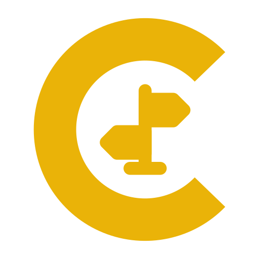
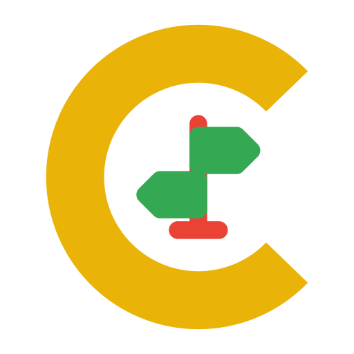

Find a Linux or BSD distro
you have not tried yet.
How it works
- Pick a family, or all of them.
- Choose whether discontinued projects count.
- Get one distro from that pool, picked at random. It is not matched to you.
1 Which family?
2 Discontinued projects?
Your answers stay in this link and this browser. Nothing is sent anywhere.
Suggest a distro · Upstream project
Fork of Find Me A Linux Distro by KripC